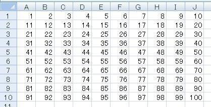

第5回.100マスに数値を入れる
まずは、前回の宿題の回答です。
Sub Macro1()
Dim i
i = 1
Do While i <= 10
Cells(1, i) = i
i = i + 1
Loop
End
Sub
縦に入れた時の、この部分を
Cells(i, 1) = i
↓
Cells(1, i) = i
このように、行数と列数を入れ替えます。
これで横に1～10が入ります。
では次は、縦10、横10のセルに、1～100までを入れてみましょう。
こんな感じに入れます。

どうでしょうか、マクロを作成してみて下さい。
↓
↓
↓
↓
↓
こんなプログラムになります。
Sub Macro1()
Dim i
Dim j
Dim k
i = 1
k =
1
Do While i <= 10
j = 1
Do While j <= 10
Cells(i, j) = k
k = k + 1
j = j + 1
Loop
i = i +
1
Loop
End Sub
急に長いプログラムになってしまった感じですが、順番に考えましょう。
iは、行数に使用します。
jは、列数に使用します。
kは入れる数値です。
そして、10行に入れるプログラムは、
i = 1
Do While i <= 10
Cells(i, 1) = i
i = i +
1
Loop
でした。
この1行に数値を入れる部分を10列に入れるようにすればよいのです。
i = 1
Do While i <= 10
10列に入れる
i = i + 1
Loop
つまり、
Cells(i, 1) = i
を
j = 1
Do While j <= 10
Cells(i, j) = 連番
j = j + 1
Loop
にするのです。
すると、
i = 1
Do While i <= 10
j = 1
Do While j <=
10
Cells(i, j) = k
j = j + 1
Loop
i = i +
1
Loop
となります。
後は、kを1ずつアップしていけば、最初のプログラムが出来上がります。
エクセルのシートは、縦横の２次元ですから、
上記のプログラムが作成出来れば、
シートの好きな位置に、好きな数値、好きな文字を入れる事が可能です。
前回も言いましたが、これが、VBAの基本であり、全てでもあります。
このプログラムを３分以内に作成出来れば、とりあえずは合格でしょう。
今回はこれだけにします。
これが十分に理解出来なければ、次に進む意味がありません。
もう一度言います。
これが基本です、腹の底に落としこんで下さい。
次回は、この100マスを、別のシートにコピーしてみましょう。
それが出来たら、縦横を入れ替えてコピーします。
ここが正念場です、ここを過ぎれば、VBAが楽しいものに変わります。
同じテーマ「マクロの記録でVBA」の記事
第6回.別のシートにコピーする
新着記事NEW ・・・新着記事一覧を見る
VBA100本ノック 100本目：WEBから100本ノックのリストを取得｜VBA練習問題（3月3日）
VBA100本ノック 99本目：自動席替え（行列と前後左右が全て違うように）｜VBA練習問題（3月2日）
VBA100本ノック 98本目：席替えルールが守られているか確認｜VBA練習問題（3月1日）
VBA100本ノック 97本目：Accessデータを取得（グループ集計）｜VBA練習問題（2月27日）
VBA100本ノック 96本目：Accessデータを取得（マスタ結合&抽出）｜VBA練習問題（2月26日）
VBA100本ノック 95本目：図形のテキストを検索するフォーム作成｜VBA練習問題（2月24日）
VBA100本ノック 94本目：表範囲からHTMLのtableタグを作成｜VBA練習問題（2月23日）
VBA100本ノック 93本目：複数ブックを連結して再分割｜VBA練習問題（2月22日）
VBA100本ノック 92本目：セルの色を16進で返す関数｜VBA練習問題（2月20日）
VBA100本ノック 91本目：時間計算（残業時間の月間合計）｜VBA練習問題（2月19日）
アクセスランキング ・・・ ランキング一覧を見る
1.最終行の取得（End,Rows.Count）｜VBA入門
2.RangeとCellsの使い方｜VBA入門
3.変数宣言のDimとデータ型｜VBA入門
4.マクロって何？VBAって何？｜VBA入門
5.Range以外の指定方法（Cells,Rows,Columns）｜VBA入門
6.セルのコピー&値の貼り付け（PasteSpecial）｜VBA入門
7.繰り返し処理（For Next)｜VBA入門
8.セルに文字を入れるとは（Range,Value）｜VBA入門
9.マクロはどこに書くの（VBEの起動）｜VBA入門
10.とにかく書いてみよう（Sub,End Sub）｜VBA入門
- ホーム
- マクロVBA入門編
- マクロの記録でVBA
- 100マスに数値を入れる
このサイトがお役に立ちましたら「シェア」「Bookmark」をお願いいたします。
記述には細心の注意をしたつもりですが、
間違いやご指摘がありましたら、「お問い合わせ」からお知らせいただけると幸いです。
掲載のVBAコードは動作を保証するものではなく、あくまでVBA学習のサンプルとして掲載しています。
掲載のVBAコードは自己責任でご使用ください。万一データ破損等の損害が発生しても責任は負いません。